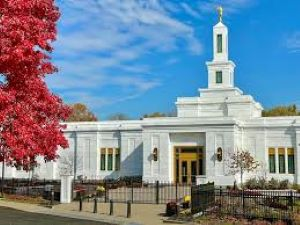
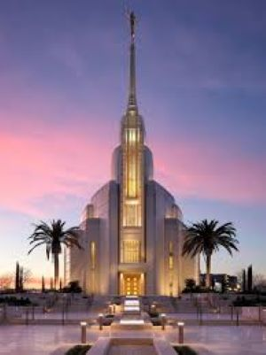
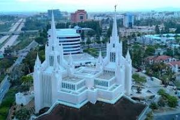

Temples of The Church of Jesus Christ of Latter-day Saints

The Salt Lake Temple is the largest and most iconic temple of The Church of Jesus Christ of Latter-day Saints. It is located in Salt Lake City, Utah, and was dedicated in 1893. The temple features six spires and intricate stonework, making it a symbol of faith and devotion for members of the church.

The Nairobi Kenya Temple is the first LDS temple in East Africa and the ninth in Africa, located in the Mountain View neighborhood. Dedicated by Elder Ulisses Soares on May 18, 2025, the facility serves a growing membership, featuring local Kenyan-inspired, savanna-toned design.

The Johannesburg South Africa Temple is a temple of the Church of Jesus Christ of Latter-day Saints located in Parktown, Johannesburg, South Africa. The intent to construct the temple was announced by church president Spencer W. Kimball in April 1981.

Built amidst intense opposition in Illinois. Saints worked diligently to finish it before fleeing, with the building later destroyed by arson and a tornado.

The Oklahoma City Oklahoma Temple is the 95th operating temple of the Church of Jesus Christ of Latter-day Saints and the first built in the state of Oklahoma. Located in Yukon, a suburb of Oklahoma City.

The Columbus Ohio Temple is the 140th operating temple of The Church of Jesus Christ of Latter-day Saints. It is located in Columbus, Ohio, and was dedicated on September 17, 2023. The temple features a modern design with a single spire and serves members in the surrounding area.

The Rome Italy Temple is the 142nd operating temple of The Church of Jesus Christ of Latter-day Saints. It is located in Rome, Italy, and was dedicated on March 19, 2023. The temple features a unique design inspired by ancient Roman architecture and serves members in Italy and surrounding countries.

The San Diego California Temple is the 27th operating temple of The Church of Jesus Christ of Latter-day Saints. It is located in San Diego, California, and was dedicated on April 25, 1993. The temple features a modern design with two spires and serves members in the surrounding area.
The Portland Oregon Temple is the 34th operating temple of The Church of Jesus Christ of Latter-day Saints. It is located in Lake Oswego, a suburb of Portland, Oregon, and was dedicated on August 30, 1989. The temple features a modern design with a single spire and serves members in the surrounding area.